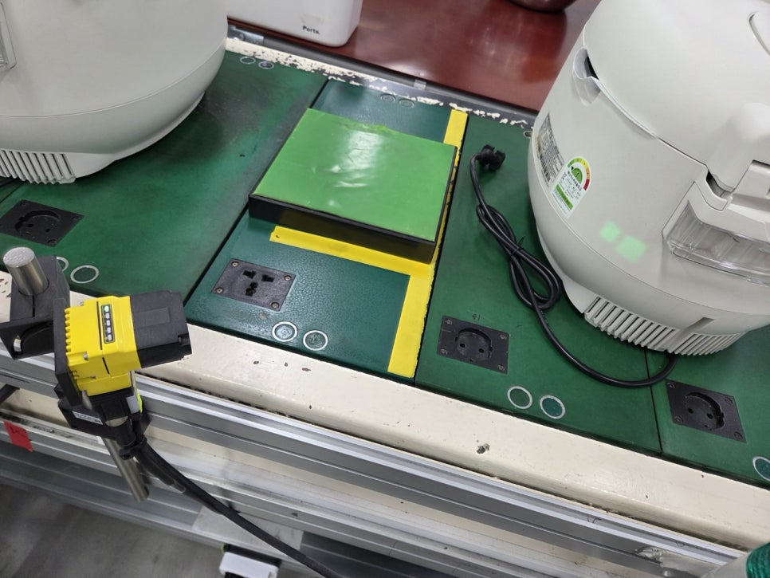
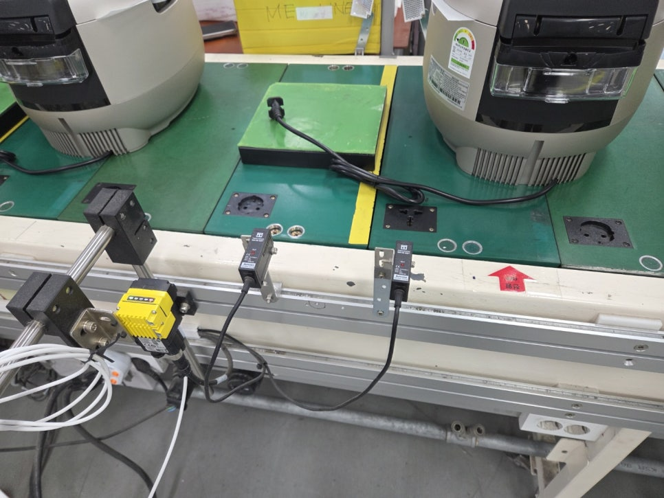
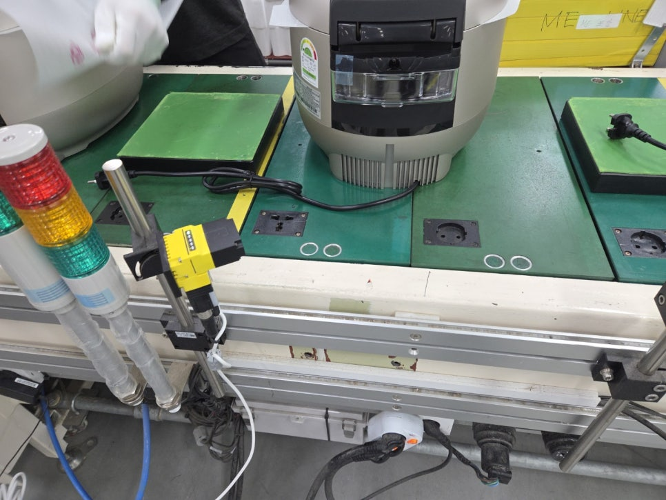

가전제품 · 밥솥 조립
밥솥 제조공정 바코드 자동인식·MES 연동
내수용·수출용 밥솥의 서로 다른 바코드 위치에 대응하고, 고정식 리더기의 판독 데이터를 HID 방식으로 자체 MES에 입력한 사례입니다.

Project Summary
프로젝트 구성
- 산업
- 가전제품 · 밥솥 조립
- 검사 대상
- 가전제품 · 밥솥 조립
- 검사 목적
- 내수용·수출용 밥솥의 서로 다른 바코드 위치에 대응하고, 고정식 리더기의 판독 데이터를 HID 방식으로 자체 MES에 입력한 사례입니다.
01 · Overview
프로젝트 개요
밥솥 조립라인에서 작업자가 핸드스캐너로 수행하던 반복 판독을 고정식 바코드 자동인식으로 전환했습니다. 제품의 바코드 위치와 작업자 환경, 기존 MES 입력 방식을 함께 검토했습니다.
02 · Problem
고객이 겪던 문제
작업자는 조립할 때마다 스캐너를 집어 바코드를 읽어야 했습니다. 내수용과 수출용의 바코드 부착 위치도 달라 한 방향의 판독만으로는 대응하기 어려웠습니다. 작업자가 컨베이어 옆에 있어 외부 조명의 눈부심도 고려해야 했습니다.
제품별 바코드 위치 차이
반복 스캔과 판독 누락
작업자 눈부심
기존 MES 입력 방식 유지
03 · Solution
ASPEC 검사 구성
컨베이어 상부와 하부에서 바코드를 읽도록 고정식 리더기를 배치했습니다. 별도 외부 조명 없이 설치 각도와 노출을 조정하고 HDR 기능으로 밝기 편차에 대응했습니다. 판독한 문자열은 HID 방식으로 자체 MES 입력창에 전달하도록 구성했습니다.
04 · Inspection Process
검사 방법
제품별 바코드 위치 확인 고정식 리더기로 바코드 판독 HDR을 활용한 밝기 편차 대응 HID 방식으로 자체 MES 입력
- 01제품별 바코드 위치 확인
- 02고정식 리더기로 바코드 판독
- 03HDR을 활용한 밝기 편차 대응
- 04HID 방식으로 자체 MES 입력
05 · Gallery
실제 검사 화면 및 이미지


06 · Result
적용 결과
- 작업자의 반복 핸드스캐너 조작 감소
- 내수용·수출용 바코드 위치 대응
- 기존 MES로 판독 데이터 자동입력
- 별도 외부 조명 없이 작업환경 고려
07 · Technology
사용 기술 및 관련 제품
- Cognex 고정식 바코드 리더기
- HDR
- HID
- MES 연동
- 산업용 바코드 리더기
- 검사 소프트웨어·MES 연동
비슷한 검사 문제를 검토하고 계신가요?
검사 대상, FOV, WD, 택타임과 불량 유형을 알려주시면 카메라·렌즈·조명, 비전 소프트웨어와 설비 연동 구성을 함께 검토합니다.